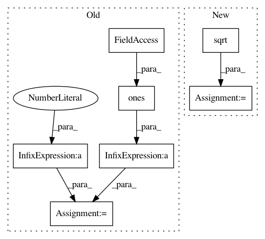

33cdc0ba9dcad9db132205012ac9c6b015c50436,dipy/denoise/tests/test_lpca.py,,test_lpca_rmse,#,130
Before Change
def test_lpca_rmse():
S0 = 100 + 2 * np.random.standard_normal((22, 23, 30, 20))
S0ns = localpca(S0, sigma=np.std(S0))
rmses = np.sum(np.abs(S0ns - 100) / np.sum(100 * np.ones(S0.shape)))
// error should be less than 5%
assert_(rmses < 0.05)
After Change
def test_lpca_rmse():
S0_w_noise = 100 + 2 * np.random.standard_normal((22, 23, 30, 20))
rmse_w_noise = np.sqrt(np.mean((S0_w_noise - 100) ** 2))
S0_denoised = localpca(S0_w_noise, sigma=np.std(S0_w_noise))
rmse_denoised = np.sqrt(np.mean((S0_denoised - 100) ** 2))
// Denoising should always improve the RMSE:
assert_(rmse_denoised < rmse_w_noise)
In pattern: SUPERPATTERN
Frequency: 3
Non-data size: 7
Instances
Project Name: nipy/dipy
Commit Name: 33cdc0ba9dcad9db132205012ac9c6b015c50436
Time: 2017-06-20
Author: arokem@gmail.com
File Name: dipy/denoise/tests/test_lpca.py
Class Name:
Method Name: test_lpca_rmse
Project Name: keras-team/keras
Commit Name: 93ff2240f329431e77f3e613a8dbfaab911c82e9
Time: 2015-06-25
Author: lchen3@gmail.com
File Name: keras/layers/recurrent.py
Class Name: JZS1
Method Name: __init__
Project Name: keras-team/keras
Commit Name: 93ff2240f329431e77f3e613a8dbfaab911c82e9
Time: 2015-06-25
Author: lchen3@gmail.com
File Name: keras/layers/recurrent.py
Class Name: JZS2
Method Name: __init__